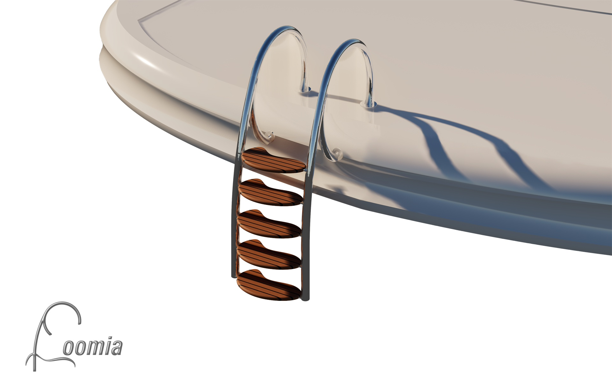
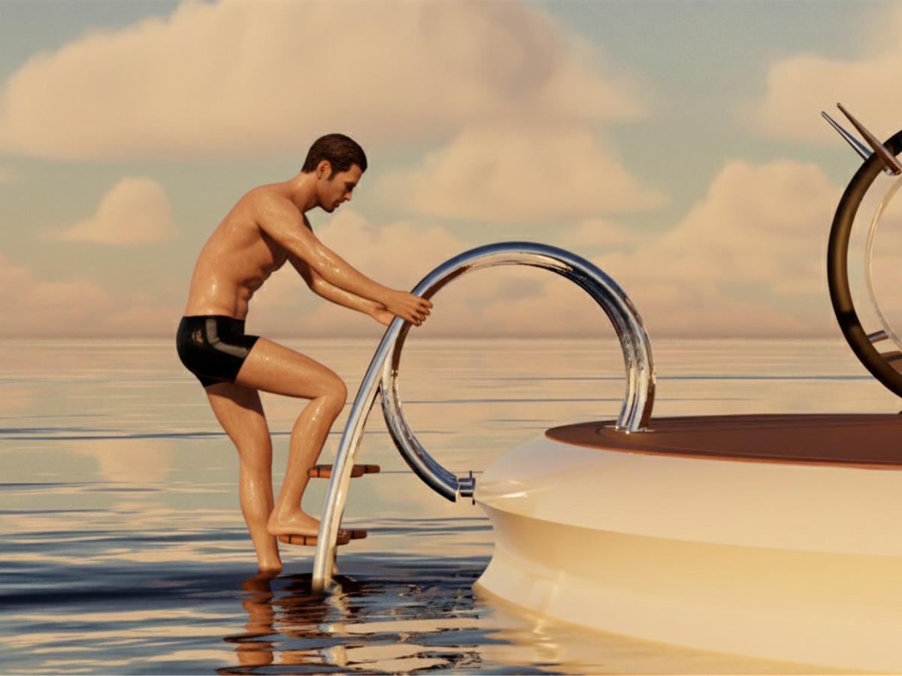
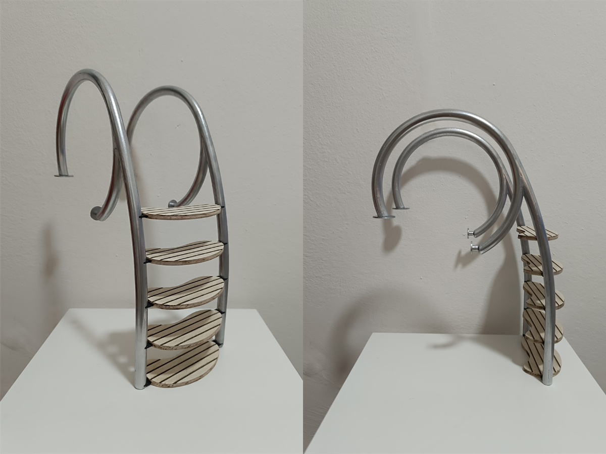
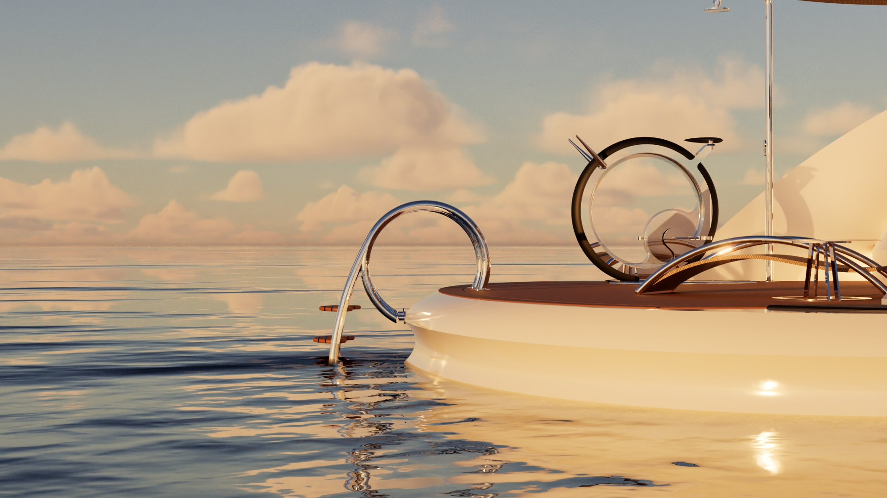

Loomia
Loomia reinterpreta l'accesso in mare trasformando un elemento tecnico in un elemento dal design scultoreo. Linee fluide ispirate al movimento delle onde si fondono con i materiali d'eccellenza della tradizione nautica.

- Tipo
- Progetto concorso
- Anno
- 2025
- Ruolo
- Design e prototipazione
- Strumenti
- Rhino, Twin Motion
Il brief
Il concorso promosso da Besenzoni, leader globale nella produzione di accessori per la nautica di lusso, richiedeva l'ideazione di una scaletta da bagno innovativa, destinata a imbarcazioni nel range dei 24-30 metri. La sfida era coniugare l'assoluta resistenza agli agenti corrosivi marini con un'estetica minimale, performante ed elegante, capace di integrarsi perfettamente con le linee dei moderni superyacht.
Il processo
Lo sviluppo è partito da un'attenta analisi di mercato e dei competitor, incrociata con rigidi vincoli tecnici: angolo di inclinazione (45-60°), dimensioni dei gradini e ingombri di stivaggio. La fase di concept, ispirata al dinamismo delle onde, ha cercato l'equilibrio tra estetica ed ergonomia di risalita (usabilità). Per i materiali, la scelta è ricaduta su un connubio intramontabile ma ingegnerizzato in chiave contemporanea: una struttura portante in Acciaio Inox AISI 316 lucidato a specchio, accoppiata a pedate in Teak per garantire grip, calore al tatto e durabilità.



Il risultato
"Ogni curva racconta il gesto di chi la percorre". Loomia è una scaletta che garantisce un'eccellente sicurezza e comfort durante l'interazione con l'utente, mantenendo una silhouette visivamente leggera e dinamica. La cura maniacale delle proporzioni e dei dettagli costruttivi la rende una soluzione luxury pronta per l'industrializzazione nel settore nautico di altissima gamma.